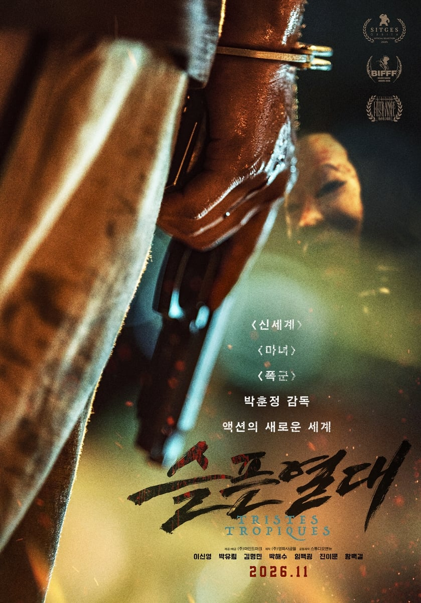
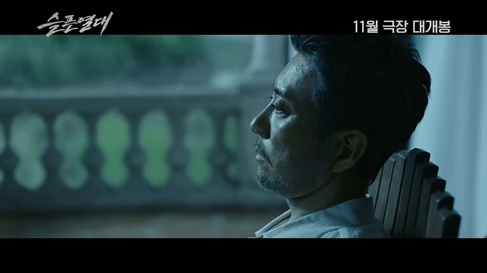
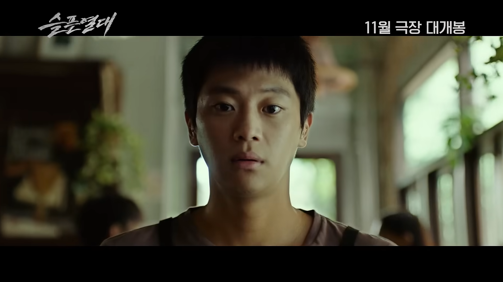
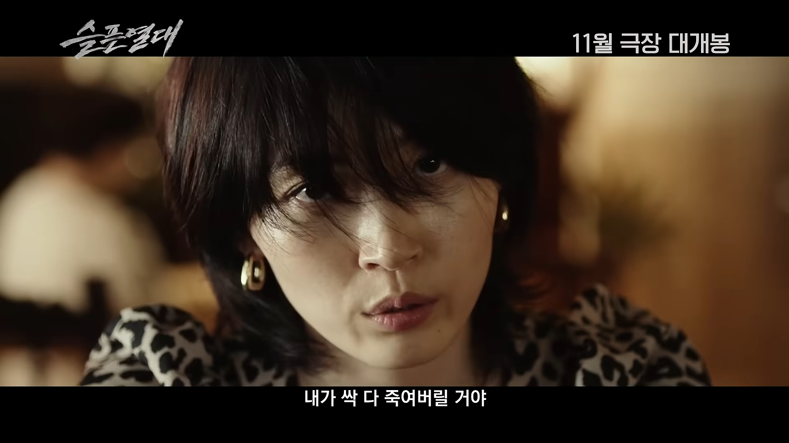
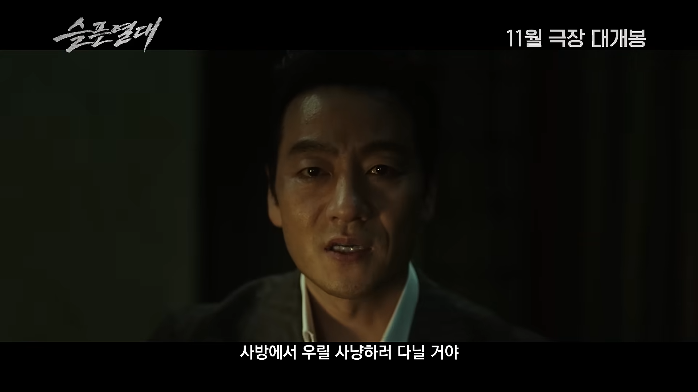

박훈정 감독
이신영, 박유림, 김명민, 박해수, 임백굉, 진이문, 왕백걸 출연
마녀 재밌게 봤는데 이번 것도 궁금함
박훈정 감독 신작이라 기다리는 중





박훈정 감독
이신영, 박유림, 김명민, 박해수, 임백굉, 진이문, 왕백걸 출연
마녀 재밌게 봤는데 이번 것도 궁금함
박훈정 감독 신작이라 기다리는 중
차승원 안 나옴?
전편에서 죽지 않았나?
안죽은게 공식이래
허허.....마녀가 재밌다라
내 취향에 맞는 후까시라 영화 드라마 공개할떄마다 봄 ㅋㅋㅋㅋ
어이없는 설정인데 내 스탈이라서 나도 재밌게 봄 ㅋㅋㅋㅌ
같은 세계관임? 아님 감독만 같은거?
마녀2 개쳐망한거 알제?
안망했는디
마녀2 손익분기 넘었을걸
아니 그 작품적으로 존나 재미없음..
작품적으로 재미없다는건 뭐여
그냥 너가 재미없게 봤다는거임?
마녀2는 마녀1 재탕임 2 주인공이 구자윤이랑 서사가 똑같음 1을 재밌게 봤으면 2가 재밌을수가 없음
그건 니 개인적인 소감이고.. 개쳐망했다는거랑은 별개아니냐
이야기 흐름상 마녀2 끝부분에서 마녀에 대한 두 계파랑 연결되는부분 시작이라 기대하는건데 그냥 이야기구성만보고 노잼이라하니까 씁쓸하네
그건 맞음 ㅈㅅ..
난 쥰내 재밌게 봤는데
1보다는 아니여도 2 나름 재밌었는뎅
이건 잘 모르겠는데 폭군도 그렇고 전부 같은 세계관이라는데 세계관 컨셉인지는 몰라도 인물들이 전부 중2병 가오 존나 심함 하나같이 죄다
너 잘못했어 안했어?
몇 대 맞을래?
슬픈 열대 맞을거야? 기쁜 한대 맞을거야?
이냥반은 그냥 방귀만 끼다가 말어
귀공자 볼만했는데 얘기가 없네
마녀3이나 빨랑좀 내놔라
마녀 유기야?
마녀3나 폭군2 좀 나왔으면 좋겠네
한국작에서 보기 어려운 가오임
유일하게 진짜 ㅈㄴ 유치하고 ㅈㄴ 얼척없는 연출에 ㅈㄴ 꽝이라고 생각하는 국내 영화 시리즈인데 이상하게 나오면 다 극장가서 보게 됨 이유를 모르겠음 ㅋㅋㅋ
김명민 나오네. 작품 별로일듯
ㄹㅇ 연기 잘하는거랑 별개로 작품고르는 안목은 최악인듯
감독이 피칠갑 연출을 워낙 잘하긴 하는데
작품따라ㅜ호불호가 심함.
신세계로 훅 떴다가 대호, 브아이이피로 훅 떨어졌다 하는등
작품별 차이가 있음
그래도 성인 취향에 맞는 잔혹한 액션씬은
황해 감독이랑 같이 우리나라 탑급이라 생각함
마녀2는 기록말소형이냐..
낙원의밤 마녀2는 그닥이었는데 마녀 귀공자 폭군은 뇌빼고 괜찮게 본듯
마녀3은 언제 나옴..
그 오글거리는 대사 좀만 빼면 킬링타임용으로는 볼 거 같은데
기대 하나도 안됨. 마녀1으로부터 세계관이 단 한 발자국도 진전이 없다고 생각함. 인물만 자꾸 새롭게 나오면 세계관 확장이라고 착각하는 게 아닐까 싶음. 이야기가 진행이 되어야 하는데, 1편에 했던 이야기 계속 뇌절치면서 함.
마녀1 - 마녀2 - 귀공자 - 폭군까지 했던 얘기 또하고 또하고.
달걀먹는 김다미 내놓으라고!!
저거 시리즈 개별적인 작품은 적당히 매력있고 괜찮은데
같은 세계관으로 확장해서 죽 이어서 보면 이상함
박훈정 한국영화계의 쿠보임
후까시는 뒤짐 ㄹㅇ
신세계2 언제나옴??
박훈정 후까시가 맛돌이임. 내용 스토리 다필요없고 주인공 뭐있어보이게 만드는건 기가막힘
맨날 밑밥만 존나깔고 ㅅㅂㅋㅋㅋㅋㅋ
걍 똥을 안닦고 끝내는게 아니라 그냥 팬티입은채로 싸고 바지 올리면서 가버리고 엔딩크레딧 올라감
넷플 공무원이 여기에도 있네
나 폭군도 나름 재밌게 봐서ㅋㅋㅋ이것도 볼것같네
신세계 만든 감독은 도대체 어디서 뭘 하고 있길래 다음 작품 소식이 없냐. 죽었나.
똥냄새가 뚫고 나오는데